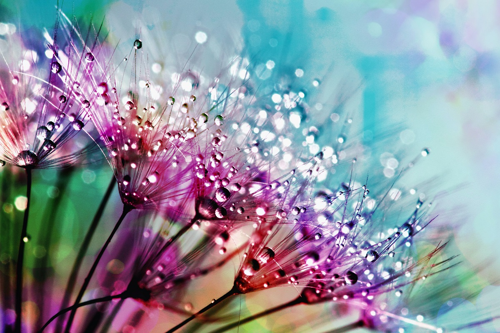
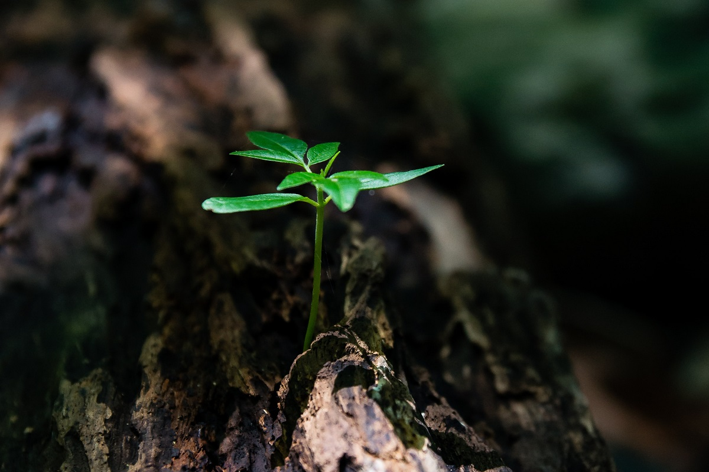
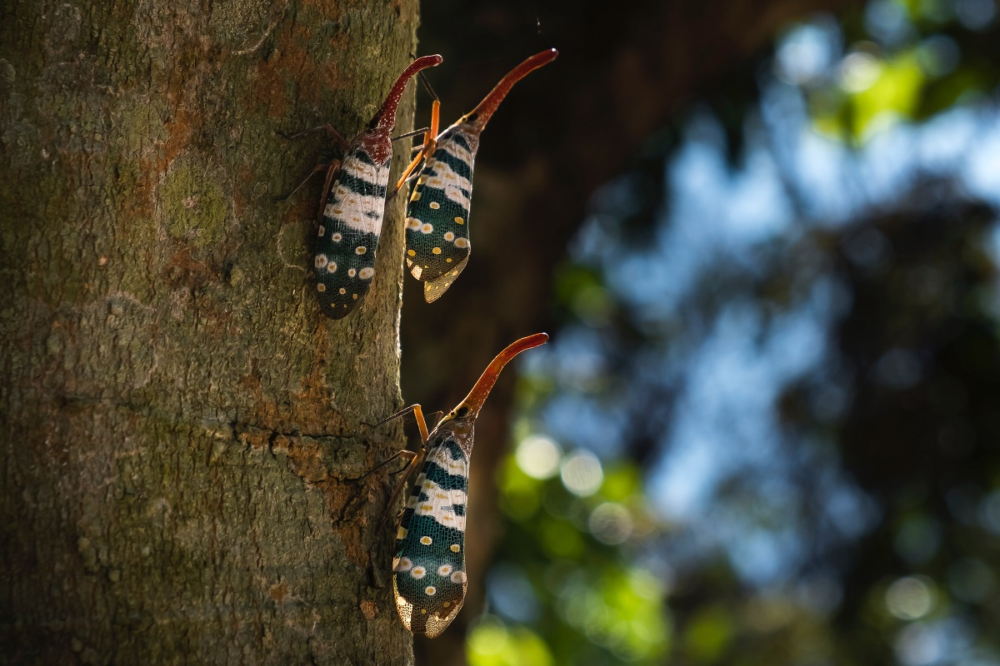

photoblog
❰
wróć do strony głównej
Mikroskopijne stworzenia przypominają istoty nie z tego świata. Ich wygląd jest egzotyczny i nietypowy, a czasami wręcz dziwny. Omijamy tą niesamowitą część naszej rzeczywistości każdego dnia, choć jest tak blisko nas. A wystarczy tylko się schylić…



